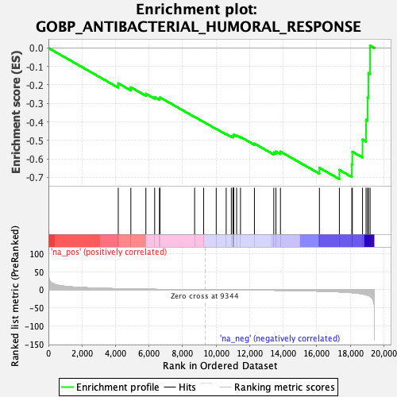

| | | Dataset | DE_genes |
| Phenotype | NoPhenotypeAvailable |
| Upregulated in class | na_neg |
| GeneSet | GOBP_ANTIBACTERIAL_HUMORAL_RESPONSE |
| Enrichment Score (ES) | -0.70971143 |
| Normalized Enrichment Score (NES) | -1.8842056 |
| Nominal p-value | 0.0 |
| FDR q-value | 0.11312754 |
| FWER p-Value | 0.555 |
Table: GSEA Results Summary

Fig 1: Enrichment plot: GOBP_ANTIBACTERIAL_HUMORAL_RESPONSE
Profile of the Running ES Score & Positions of GeneSet Members on the Rank Ordered List
| SYMBOL | RANK IN GENE LIST | RANK METRIC SCORE | RUNNING ES | CORE ENRICHMENT | | 1 | FGA | 4164 | 2.738 | -0.1912 | No |
| 2 | SEMG1 | 4916 | 2.000 | -0.2129 | No |
| 3 | H2BC11 | 5812 | 1.343 | -0.2476 | No |
| 4 | PGC | 6336 | 1.025 | -0.2658 | No |
| 5 | SPINK5 | 6625 | 0.868 | -0.2732 | No |
| 6 | RNASE6 | 6650 | 0.859 | -0.2672 | No |
| 7 | RPL39 | 8718 | 0.128 | -0.3726 | No |
| 8 | IGHA2 | 9255 | 0.019 | -0.4000 | No |
| 9 | H2BC12 | 10007 | -0.128 | -0.4376 | No |
| 10 | H2BC8 | 10601 | -0.274 | -0.4659 | No |
| 11 | H2BS1 | 10908 | -0.358 | -0.4786 | No |
| 12 | JCHAIN | 11007 | -0.388 | -0.4803 | No |
| 13 | IGKV3-20 | 11017 | -0.390 | -0.4775 | No |
| 14 | DEFB1 | 11025 | -0.392 | -0.4745 | No |
| 15 | H2BC4 | 11037 | -0.399 | -0.4717 | No |
| 16 | PI3 | 11052 | -0.403 | -0.4690 | No |
| 17 | H2BC7 | 11224 | -0.448 | -0.4740 | No |
| 18 | IGHA1 | 11455 | -0.521 | -0.4814 | No |
| 19 | IGHM | 12285 | -0.800 | -0.5173 | No |
| 20 | NOD2 | 13441 | -1.321 | -0.5655 | No |
| 21 | WFDC3 | 13569 | -1.397 | -0.5602 | No |
| 22 | H2BC21 | 13838 | -1.560 | -0.5607 | No |
| 23 | WFDC2 | 16162 | -3.753 | -0.6484 | No |
| 24 | SPON2 | 17352 | -5.845 | -0.6599 | Yes |
| 25 | SLPI | 18094 | -8.056 | -0.6295 | Yes |
| 26 | HLA-E | 18126 | -8.181 | -0.5615 | Yes |
| 27 | PLA2G6 | 18733 | -11.460 | -0.4951 | Yes |
| 28 | DMBT1 | 18943 | -13.747 | -0.3889 | Yes |
| 29 | ANG | 19036 | -14.879 | -0.2669 | Yes |
| 30 | TF | 19086 | -15.735 | -0.1355 | Yes |
| 31 | HLA-A | 19184 | -18.035 | 0.0131 | Yes |
Table: GSEA details [plain text format]
Fig 2: GOBP_ANTIBACTERIAL_HUMORAL_RESPONSE: Random ES distribution
Gene set null distribution of ES for GOBP_ANTIBACTERIAL_HUMORAL_RESPONSE